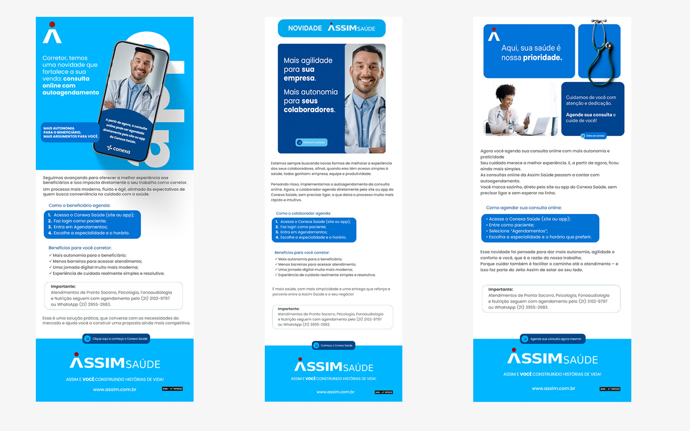
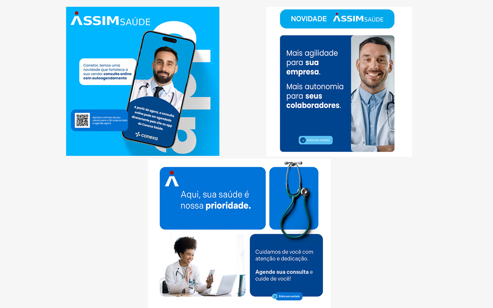
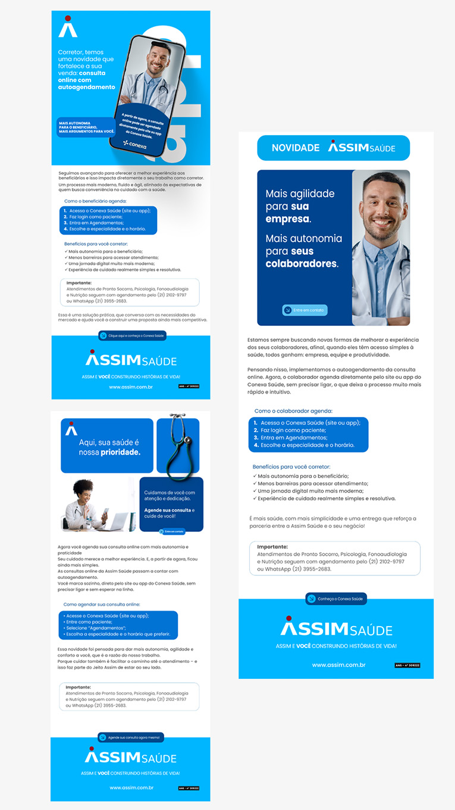

Social Media Campaign
A set of digital pieces created to maintain visual consistency, message clarity and alignment with the brand identity.

Overview
The campaign was developed to organize a brand's visual communication across social media, maintaining consistency between the pieces, message clarity and adaptability across different formats.
The Challenge
The main challenge was to create varied pieces without losing the campaign's visual consistency, ensuring that each publication could be recognized as part of the same visual system.
Solutions
- Definition of the campaign's visual language.
- Creation of pieces for different formats.
- Standardization of colors, typography and graphic elements.
- Organization of the information hierarchy.
- Adaptation of pieces for feed posts and stories.
- Image treatment and framing.
- Maintenance of consistency with the brand identity.
Content Strategy
The campaign was structured to maintain consistent visual communication, make publications easier to recognize and organize different types of content within the same graphic language.
- Definition of a visual identity for the publications.
- Organization of colors, typography and graphic elements.
- Creation of adaptable templates for different types of content.
- Planning of a coherent visual sequence for the feed.
- Application of the identity across post and story formats.
Creative Process
The development process began with an analysis of the communication objective and the definition of the elements that should remain consistent across the pieces. From this foundation, flexible compositions were created, allowing images and messages to vary without losing the campaign's visual identity.
- Visual reference research.
- Definition of the information hierarchy.
- Creation of the initial structure of the pieces.
- Development of variations for different formats.
- Review of alignment, contrast and readability.
- Export of materials for digital publication.
Social Media Applications
The pieces were developed as part of a flexible visual system, maintaining consistency across different types of content and publication formats.



Technologies & Skills
Project Outcome
The project resulted in a set of pieces with visual consistency, clear hierarchy and adaptability across different types of content and formats. Standardization made it easier to maintain continuity in communication without making the publications repetitive.
- Greater consistency across publications.
- Improved organization of information within the pieces.
- Adaptation of the identity for posts and stories.
- Creation of a reusable foundation for new content.
- Strengthening of the campaign's visual presentation.
Key Learnings
During the project, I deepened my knowledge of visual campaign creation, adapting content to different formats, brand consistency and organizing messages for social media.